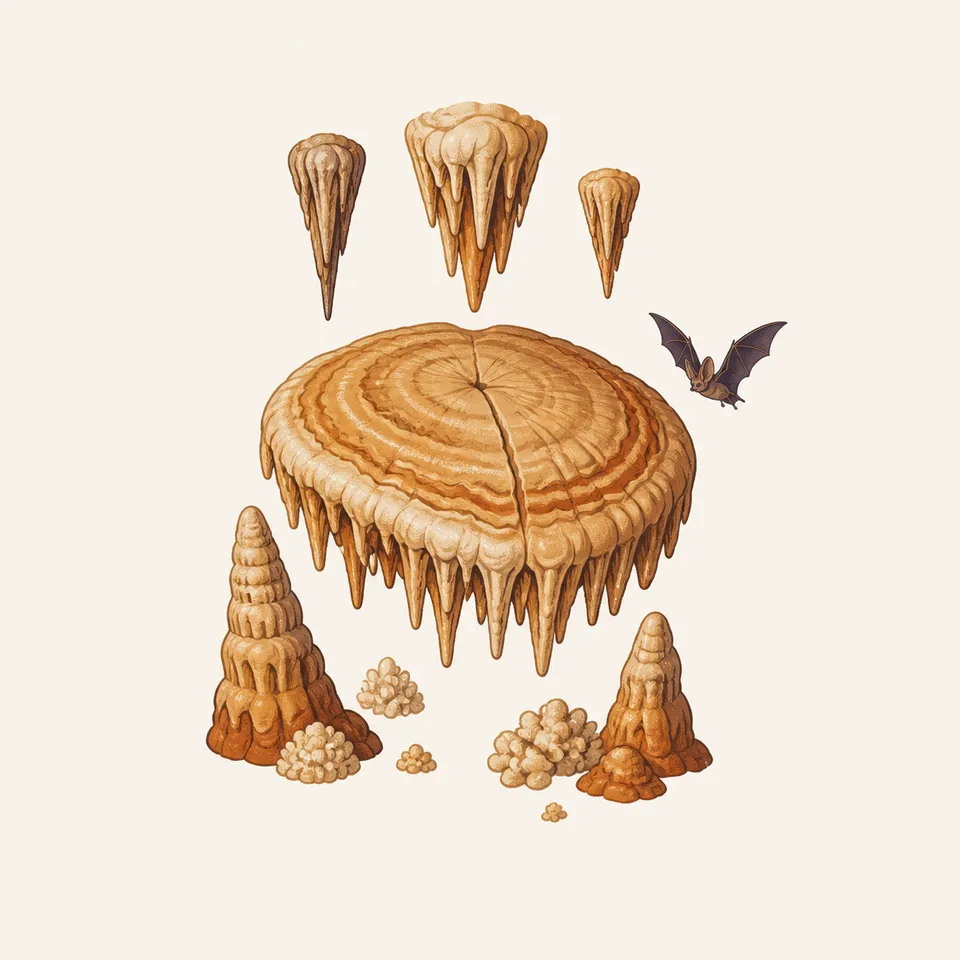
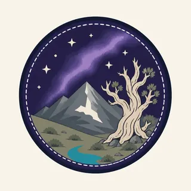

01
Wheeler Peak
From the 13,063-foot summit to sagebrush foothills, the homepage says the park samples the larger Great Basin. Glacial cirques, moraines, and tarns are part of that sample, along with the region's only glacier.
TrailMark Archive Edition
Nevada | South Snake Range
Wheeler Peak, bristlecone pines, and Lehman Caves, in a park established on October 27, 1986.
Archive No. TM-GRBA-026
National Park since 1986
Collection South Snake Range
Park Overview
Great Basin National Park was established by an act of Congress on October 27, 1986. That act abolished Lehman Caves National Monument and brought its land into the park.
The management page describes more than 77,000 acres, and elsewhere on the same page 77,100 acres, including Wheeler Peak, the highest peak contained within Nevada. The park homepage gives that summit as 13,063 feet. The mission written from the legislation is to protect a representative piece of the Great Basin, not only a cave.
Over 660 species of plants and animals are cited there. Bristlecone pines survive in excess of 4,000 years. More than 45 caves are known, Lehman Caves the most visited. The page also names the only glacier in the Great Basin region, and visibility that often exceeds 120 miles.
Emotional Thesis
The header is a bristlecone under the Milky Way, with the peak behind it. The park is young in law and old in wood. NPS says these pines are among the oldest known living trees, and that they can live past 4,000 years.
Prometheus, a bristlecone cut in 1964 under the Wheeler Peak grove, had 4,862 growth rings and was estimated at about 4,900 years, the oldest tree dated at that time. The park did not exist yet. The Forest Service had given permission. The story is on the park's own history page, and it is not a comfortable one.
Landscape Highlights
01
From the 13,063-foot summit to sagebrush foothills, the homepage says the park samples the larger Great Basin. Glacial cirques, moraines, and tarns are part of that sample, along with the region's only glacier.
02
Absalom Lehman ranching near today's Lehman Creek in the 1870s found the cave in 1885 and spent the rest of his life guiding people through it. The homepage describes stalactites, stalagmites, popcorn, cave shields, and mystery. The extra drawing is that vocabulary: a shield, drapery, and popcorn.
03
The park describes its night sky as among the darkest rarely seen in the United States, and the management page says visibility often exceeds 120 miles. The Milky Way in the header is the archive agreeing with that sentence.
Wildlife
Over 660 species of flora and fauna are the management page's figure for biological diversity. The essay does not break that into a checklist.

01
Bristlecones are the plants the park asks you to walk among. They are the old individuals, not a forest to cut.
02
The extra plate shows a bat among formations. Lehman Caves is the place. A bat number was not on the pages opened here.
03
Sheep still graze high meadows on the west side in summer, a sentence from the people page. That is a cultural fact as much as a wildlife one.
Geology
More than 45 caves, Lehman the best known. Glacial cirques, moraines, tarns, and the only glacier in the Great Basin.
01
The homepage calls Lehman a marble cave with stalactites, stalagmites, popcorn, and cave shields. The drawing matches that list.
02
Currey's 1964 work was an attempt to age the moraines under the bristlecones. The trees were a clock for the ice.
03
Wheeler Peak at 13,063 feet is the high end of a park that also includes sagebrush foothills. Both are the geology you can stand on.
The homepage notes that snow can come early, even in fall. Wheeler Peak and the bristlecone trail are not a casual winter walk. Read NPS before you start up.
The cave is the reliable visit when the peak is still white. Tours are scheduled by the park, not by this page.
This is the season for the grove and the lakes. It is also when sheep are on high west-side meadows. Share the trail.
Dark-sky nights and an early storm can happen in the same week. The Milky Way in the painting assumes a clear one. Check the moon, as the park itself says.
Photography
A night photograph of Wheeler Peak alone could be many mountains. The twisted bristlecone is what makes it this park.
01
The header puts the tree large and the peak behind. That ratio is the idea.
02
Formations are the extra plate. Do not leave the trail in Lehman Caves to light a shield yourself.
03
The Prometheus story is already a cut tree. The living grove does not need another mark.
Field Notes
The oldest trees here were already ancient when someone decided, in 1986, to call the mountain a park.
TrailMark Field Notes

Badge Story
The badge fails if the tree could be a juniper at a desert park. It needs the twisted trunk and the night, with Wheeler Peak behind.
A pale peak and a darker, older tree in front.
Stars are allowed. They are the park's other fame.
The cave is the extra plate: shields and popcorn, not a second badge.
Archive No.026
LocationSouth Snake Range
ReleaseBristlecone Mark
Stewardship / Safety
Air quality here is described as the best in the continental United States. That is a thing to protect, not a slogan to test with a fire.
Stay on the bristlecone trail. Prometheus was cut with permission and it is still told as a loss.
In the cave, do not touch formations. The shields and popcorn in the drawing took longer than the park has existed.
Cultural traces run back about 12,000 years. Leave artifacts and mine relics in place.
Weather on Wheeler Peak changes fast. The NPS page, not this essay, has the day's trail status.
Current conditions, fees, and alerts are on the National Park Service site.
Continue the Archive
Carlsbad Caverns is the Permian reef. Great Basin is a marble cave under bristlecones, with a peak that holds the only glacier in the region.